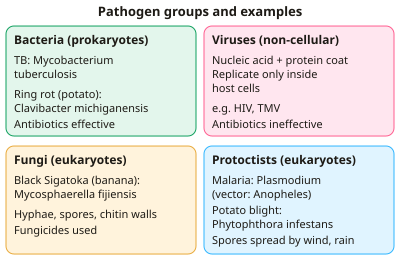

A-level Biology Year 13 · Topic 15
Pathogens, disease and immunity
Pathogens, disease and immunity is about the constant contest between disease-causing organisms and the defences of plants and animals.
We will meet the pathogens and diseases on the specification, how they spread and are controlled, and how plants defend themselves.
Then we work through the human immune system in detail, from barriers and phagocytes to B cells, T cells and antibodies, and finish with vaccination and monoclonal antibodies.
- 7 subtopics
- 247 questions
- Free: 15.1 notes and 10 questions
In this topic
- 15.1Pathogens and disease: bacteria, viruses, fungi and protoctists (TB, malaria, potato blight, Black Sigatoka, ring rot)Free below · 51 questions
- 15.2Transmission and control of diseaseOpen in Full Marks · 24 questions
- 15.3Plant defences against pathogensOpen in Full Marks · 28 questions
- 15.4Non-specific defences: barriers, phagocytosis, inflammation and interferonOpen in Full Marks · 47 questions
- 15.5The specific immune response: B and T lymphocytes and antibodiesOpen in Full Marks · 32 questions
- 15.6Vaccination, active and passive immunity and herd immunityOpen in Full Marks · 24 questions
- 15.7Monoclonal antibodies and their usesOpen in Full Marks · 41 questions
15.1 · Free notes
Pathogens and disease: bacteria, viruses, fungi and protoctists (TB, malaria, potato blight, Black Sigatoka, ring rot)

Key points
- A pathogen is a microorganism that causes disease. The four groups on the Edexcel specification are bacteria, viruses, fungi and protoctists.
- Bacteria are prokaryotes with no nucleus, a peptidoglycan cell wall and free-floating DNA. They cause damage by destroying host cells and by releasing toxins. Antibiotics can treat bacterial disease.
- Viruses are non-cellular: a nucleic acid core inside a protein coat. They are obligate intracellular parasites, so they replicate only inside host cells using the host's machinery. They have no metabolism of their own, so antibiotics are ineffective.
- Fungi are eukaryotes with chitin cell walls and thread-like hyphae. They spread by spores and digest host tissue externally. They are treated with fungicides (or antifungals), not antibiotics.
- Protoctists are eukaryotes. Some are parasites, such as Plasmodium (malaria). Others, such as Phytophthora infestans, are fungus-like and cause plant disease.
- TB is caused by the bacterium Mycobacterium tuberculosis. It is spread by droplets from coughs and sneezes and infects the lungs, forming tubercles. People with HIV or malnutrition are more at risk because their immune systems are weaker.
- TB is hard to treat because patients need a long course (about 6 months) of several antibiotics. Incomplete courses select for antibiotic-resistant strains such as MDR-TB.
- Malaria is caused by Plasmodium species. The vector is the female Anopheles mosquito, which injects sporozoites when it feeds. The parasites multiply first in the liver, then in red blood cells. Fever occurs when infected cells burst.
- Potato blight (Phytophthora infestans) forms hyphae in leaves and tubers, causing rot. Spores spread by wind and rain. It caused the Irish famine of the 1840s. Black Sigatoka is a fungal disease of bananas (Mycosphaerella fijiensis). Its lesions reduce the leaf area available for photosynthesis, so yield falls.
- Ring rot of potatoes is caused by the bacterium Clavibacter michiganensis subsp. sepedonicus. It blocks the xylem, causing wilting and a ring of decay in tubers. It spreads through infected seed tubers and contaminated machinery.
In more detail
- Black Sigatoka: a fungal disease of bananas (Mycosphaerella fijiensis) that causes dark leaf streaks, reducing photosynthesis and yield; spread by spores in wind and rain.
- Ring rot: a bacterial disease of potatoes that rots the vascular ring inside tubers; spread through infected seed potatoes and equipment, so certified seed is essential.
- TB symptoms and spread: persistent cough, weight loss and fever; more common with overcrowding, poor ventilation, malnutrition and HIV. M. bovis spreads from cattle via milk.
- Plasmodium life cycle stages: in humans, liver cells then red blood cells (asexual); in mosquitoes, gametes fuse in the gut (sexual) and new parasites move to the salivary glands.
Practice
Pathogens and disease: bacteria, viruses, fungi and protoctists (TB, malaria, potato blight, Black Sigatoka, ring rot): 10 questions
Pick an answer to check it, or open the answer for the explanation.
1. Which row correctly matches each disease with the type of pathogen that causes it?
- Malaria – fungus; ring rot – virus
- Black Sigatoka – bacterium; ring rot – fungus
- TB – virus; potato blight – bacterium
- TB – bacterium; malaria – protoctist
Show answer
D: TB – bacterium; malaria – protoctist. TB is caused by the bacterium Mycobacterium tuberculosis. Malaria is caused by the protoctist Plasmodium. Black Sigatoka is a fungus and ring rot is a bacterium.
2. Which organism acts as the vector that transmits malaria between humans?
- Female Anopheles mosquito
- Male Anopheles mosquito
- Tsetse fly
- Female Aedes mosquito
Show answer
A: Female Anopheles mosquito. Only female Anopheles mosquitoes take blood meals. They pick up Plasmodium from one person and inject sporozoites into the next.
3. Why are antibiotics ineffective against viral diseases?
- Viruses destroy antibiotics using enzymes
- Viruses lack their own metabolism and replicate inside host cells
- Viruses are too small for antibiotics to reach
- Viruses have thick cellulose walls
Show answer
B: Viruses lack their own metabolism and replicate inside host cells. Antibiotics target bacterial structures or metabolism. Viruses have neither and use the host cell's machinery to replicate.
4. A blood sample has 5.0 × 10^6 red blood cells per µl. 2.5 × 10^5 per µl contain Plasmodium. What percentage of red blood cells are infected?
- 5%
- 50%
- 0.05%
- 0.5%
Show answer
A: 5%. (2.5 × 10^5 ÷ 5.0 × 10^6) × 100 = 5%.
5. Ring rot of potatoes is caused by a bacterium. Which route of spread is most likely?
- Wind-blown spores from infected leaves
- Contaminated machinery and infected seed tubers
- Droplets from coughing
- Bites from Anopheles mosquitoes
Show answer
B: Contaminated machinery and infected seed tubers. Clavibacter spreads on contaminated equipment and in infected seed tubers. It does not form wind-blown spores and has no mosquito vector.
6. Black Sigatoka causes dark streaks and dead areas on banana leaves. How does this reduce yield?
- Less leaf area for photosynthesis, so less carbohydrate is produced
- Stomata stay open and the plant dehydrates
- The fungus eats the bananas directly
- Roots can no longer absorb water
Show answer
A: Less leaf area for photosynthesis, so less carbohydrate is produced. Dead tissue cannot photosynthesise, so less glucose is made and fruit growth falls.
7. Which statement about Phytophthora infestans is correct?
- It is a protoctist whose spores spread by wind and water
- It is a bacterium that blocks the xylem
- It is a virus spread by aphids
- It is a protozoan transmitted by mosquitoes
Show answer
A: It is a protoctist whose spores spread by wind and water. P. infestans causes potato blight. It is a fungus-like protoctist, and its spores are dispersed by wind and rain.
8. TB cases in a region fell from 12 000 to 9000 over five years. What was the percentage decrease?
- 33%
- 75%
- 25%
- 3000%
Show answer
C: 25%. (12 000 − 9000) ÷ 12 000 × 100 = 25%. Dividing by the final value (9000) would wrongly give 33%.
9. Which feature is true of viruses but NOT of bacteria?
- They contain genetic material
- They can cause plant disease
- They can be spread by droplets
- They can reproduce only inside host cells
Show answer
D: They can reproduce only inside host cells. Viruses are obligate intracellular parasites. Bacteria can reproduce independently, for example on agar.
10. Why is a person with untreated HIV more likely to develop active TB?
- HIV changes into TB bacteria
- HIV makes the TB bacterium grow faster
- HIV damages lung cell walls directly
- A weakened immune system cannot contain Mycobacterium tuberculosis
Show answer
D: A weakened immune system cannot contain Mycobacterium tuberculosis. HIV destroys helper T cells, so the immune response cannot wall off the TB bacteria. TB then becomes active.
Keep going in Full Marks
Full Marks has 51 questions on Pathogens and disease: bacteria, viruses, fungi and protoctists (TB, malaria, potato blight, Black Sigatoka, ring rot) (41 more than here), set out in practice levels. You also get notes and 3D models for all 7 subtopics of Pathogens, disease and immunity, plus games, timed exams and past papers.
On your exam board
Not in the AQA, OCR A, OCR B and Cambridge specifications.